地政学
リオは旧首都で、海軍、連邦機関、国際会議、港、空港、石油産業を通じ国家の記憶と外交を今も抱えます。グアナバラ湾は南大西洋の入口であり、観光都市である前に安全保障と資源管理の要衝でもある都市圏です。

🇧🇷 ブラジル / 南米 / World City Atlas
山、湾、海岸、旧首都の制度記憶、カーニバル、ファヴェーラ、石油経済、宗教、観光が近距離で重なるブラジルの象徴的な都市圏。
都市の骨格
リオデジャネイロは、グアナバラ湾と大西洋、急な丘陵、旧首都の行政遺産、海浜観光、ファヴェーラの生活圏が折り重なる都市です。
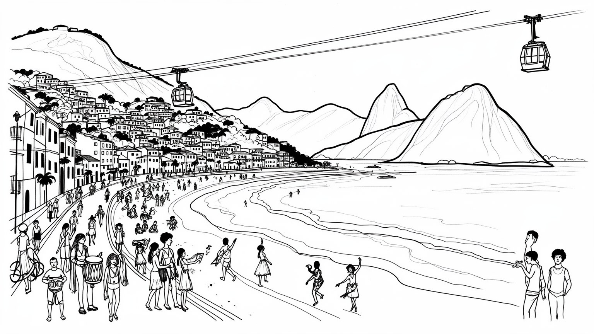
リオは旧首都で、海軍、連邦機関、国際会議、港、空港、石油産業を通じ国家の記憶と外交を今も抱えます。グアナバラ湾は南大西洋の入口であり、観光都市である前に安全保障と資源管理の要衝でもある都市圏です。
石油、ガス、港湾、観光、映像、音楽、大学、医療、金融、小売が雇用を作ります。ホテルや飲食、清掃、警備、交通、建設、家事労働も都市を支えますが、失業、非公式労働、通勤負担は大きい生活都市圏です。今も。
サンバ、カーニバル、黒人文化、カトリック、福音派、アフロブラジル信仰、海辺の余暇が日常を形づくります。祭りは観光商品だけでなく、地域組織、記憶、祈り、抵抗を結ぶ公共文化です。街の拍動も続く場です。
キリスト像、ポン・ヂ・アスーカル、コパカバーナ、ラパ、港湾地区は旅を引き寄せるが、住民には家賃、治安、通勤、豪雨、学校、医療が日々の条件です。美しい景観のそばに生活の緊張もある都市であり続ける日常です。
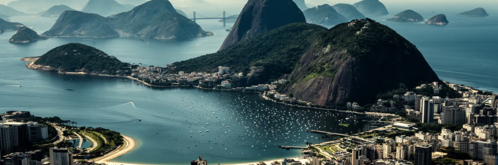
リオデジャネイロの地理は、都市の美しさと困難を同時に生んでいます。グアナバラ湾、コパカバーナやイパネマの海岸、ティジュカの山地、急斜面の丘、湖沼、埋め立て地が短い距離で接し、移動、住宅、観光、治安、排水の条件を細かく変えます。海から見る景観は開放的ですが、背後の山は道路と鉄道の通し方を制限し、低地や谷筋には交通の集中と洪水リスクが残ります。斜面に広がるファヴェーラは、都心や観光地に近い一方、土砂災害、公共サービス不足、警察作戦の影響を受けやすいです。湾は港湾と海軍の空間であり、汚染と再生の課題も抱えます。リオを読むには、絵葉書の海岸だけでなく、山が都市を分断し、同時に近づけている構造を見る必要があります。景観の劇的な起伏は、富裕層の眺望、観光客の記憶、低所得者の居住地、環境保護区の境界を同じ斜面に重ねます。都市計画は常に地形と交渉し、トンネル、橋、ロープウェー、幹線道路、排水路を通じて生活圏をつなごうとしてきました。ですが自然の強さは消えず、豪雨のたびに都市の弱い場所を露出させます。海岸から数キロ進むだけで、観光ホテル、軍施設、港湾、低地住宅、丘の集落が入れ替わるため、リオでは距離より高低差と水際への近さが生活条件を決めます。地形は眺めではなく、都市の制度そのものとして働きます。そのため地図を読むことは、誰が海に近く、誰が斜面に住み、誰が長く回り道をするのかを読むことでもあります。
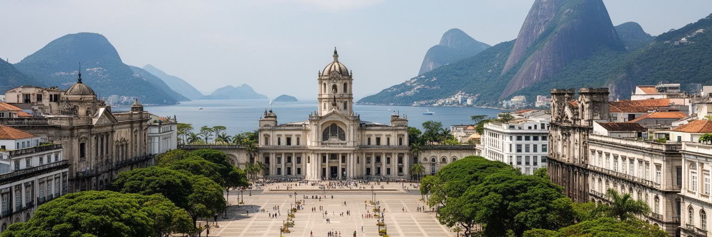
リオデジャネイロは一九六〇年に首都機能がブラジリアへ移るまで、長くブラジルの政治中枢でした。宮殿、官庁、軍、国立図書館、博物館、旧議会、外交の記憶は、市街地の建物と通りに残っています。首都でなくなった後も、国営企業、文化機関、連邦大学、海軍、テレビ局、新聞、裁判関連の機能が集まり、国家の象徴性は薄れていません。旧首都であることは、観光の歴史資源であるだけでなく、都市の自尊心、公共投資への期待、政治抗議の場所、連邦政府との距離感を形づくります。ブラジリアが計画都市として未来を表すなら、リオは植民地、帝政、共和国、軍政、民主化、オリンピックの記憶が折り重なる都市です。中心部の広場では祝典とデモが起こり、湾岸の軍事施設は南大西洋への視線を保ちます。政治の中心が去った後も、リオは国家を語る舞台であり続け、記念碑と街路はブラジル社会の対立と希望を可視化しています。国の制度が離れたことで中心部の役割は変わりましたが、抗議、追悼、文化行事、外交的な歓迎は今も旧首都の空間を使います。リオの政治性は官庁の数ではなく、国民が国家を想像する場所としての厚みに残ります。公文書、新聞、映画、学校教育に刻まれた首都の記憶は、街を歩く住民の誇りや不満にも影響し続けます。学校見学やテレビ中継が、旧首都の記憶を次の世代へ運びます。
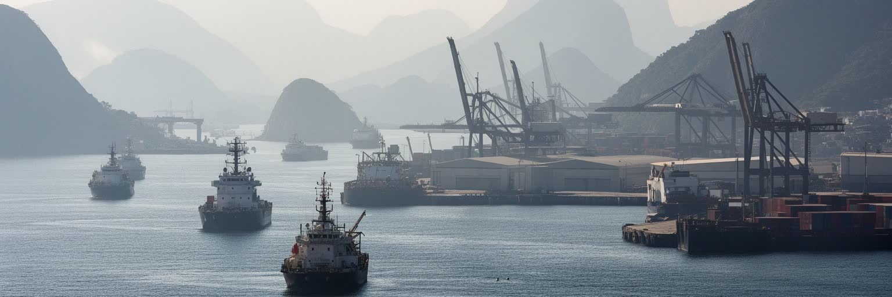
リオの経済を観光だけで説明することはできません。州内沖合の石油、ガス、海洋工学、ペトロブラス関連の技術者、港湾物流、造船、保守、金融、法律、研究機関は、都市圏に高い専門職と産業集積を生んできました。原油価格や汚職捜査、投資計画の変化は、企業本社だけでなく、下請け、ホテル、飲食、建設、自治体財政にも波及します。港湾は歴史的に奴隷貿易、移民、輸出入、海軍と結びつき、再開発された港湾地区は博物館やオフィスを引き寄せたが、周辺の労働者居住地や黒人史の記憶を消してはなりません。石油産業は富をもたらす一方、環境リスク、財政依存、雇用の循環性、技術職と低賃金サービス職の格差を強めます。港と沖合資源を読むと、リオが海辺の余暇都市であると同時に、南大西洋の資源経済を管理する都市であることが見えます。湾内の水質、貨物交通、クルーズ観光、漁業、海軍の安全保障は同じ海域を使うため、経済開発と環境管理は切り離せません。都市の雇用は海の見えない場所でも、沖合プラットフォームと港の動きに深く影響されています。海底資源を扱う技術者の仕事と、港で荷を動かす労働、展示会や出張客を受け入れるホテルの仕事は一つの産業圏を作ります。資源都市としてのリオは、景観の背後で世界市況に揺れる都市でもあります。大学と研究所はこの産業を支え、若い技術者の進路を都市につなぎ止めます。
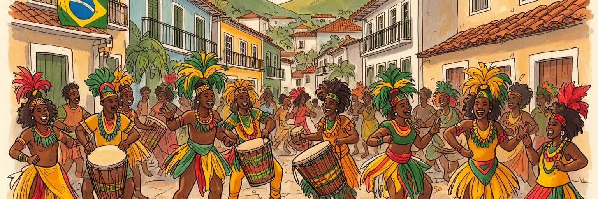
リオの文化を象徴するサンバとカーニバルは、単なる陽気な観光商品ではありません。港湾地区、丘のコミュニティ、黒人労働者、アフロブラジルの宗教、貧困地区の互助、移民と解放後の歴史が、音楽と踊りの形式を育てました。サンバスクールは巨大なパレードを準備する芸術組織であると同時に、衣装制作、楽器、教育、地域の誇り、若者の居場所、政治的な声を担います。観光客が見る華やかな行進の背後には、年間を通じた労働、資金調達、職人の技能、近隣住民の参加があります。黒人文化はリオの魅力の中心でありながら、差別、警察暴力、住宅不安、所得格差の歴史とも切り離せません。サンバを都市の読み方に置くと、音楽が娯楽である前に、排除された人びとが公共空間へ自分たちの記憶を出す方法だったことが分かります。カーニバルは国家的な祝祭であると同時に、誰が街の物語を語るのかを競う舞台でもあります。歌詞、打楽器、衣装、山車は歴史批評や宗教的象徴を含み、都市の痛みと喜びを同じリズムにのせます。テレビ中継やラジオ、配信は祭りを全国へ運びますが、リハーサル会場、路地の打楽器練習、衣装工房、家族の手伝いが祝祭を地域経済に変えます。祭りの成功は才能だけでなく、無数の小さな労働と近隣の信頼に支えられています。観光客の拍手が届く前から、地域は一年をかけて物語を選び、音を鍛え、街の誇りを形にします。
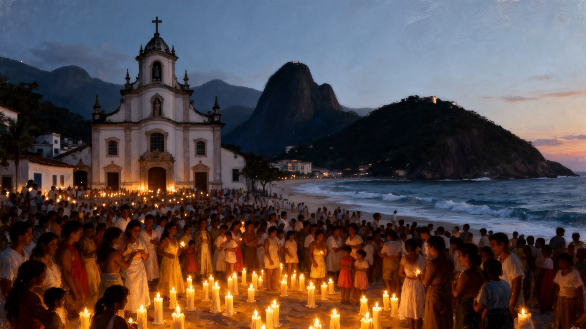
リオの宗教生活は、カトリックの聖堂、キリスト像、福音派教会、アフロブラジル信仰、スピリティズム、移民宗教、海辺の儀礼が重なっています。コルコバードのキリスト像は世界的な観光名所ですが、都市を見下ろす宗教的象徴でもあり、家族の祈り、国家的な式典、災害時の慰めに結びつきます。福音派教会は多くの周縁地区で生活相談、音楽、依存症からの回復、若者活動、政治参加の場を作ります。アフロブラジル宗教は海や自然、祖先との関係を保ちながら、偏見や暴力にさらされてきました。新年の海辺の供え物や祭礼は、観光的な景観だけでなく、都市の不安と希望を水辺に託す実践です。宗教は貧困、治安、家族、ジェンダー、選挙、福祉と接続し、公共空間の使い方にも影響します。リオを理解するには、名所としての信仰だけでなく、日常の支えとしての信仰を見る必要があります。教会の音楽、寺院の相談、海辺の祈り、路地の小さな祭壇は、都市の孤独を和らげる社会的な装置でもあります。信仰は対立を生むこともありますが、困難な生活を共同で耐える言葉を提供し、街の時間を刻み続けています。葬儀、誕生日、失業時の相談、依存症からの回復、若者の音楽活動は、しばしば宗教施設を通じて地域に戻されます。祈りは私的な行為に見えて、都市の福祉と政治を動かす公共的な力でもあります。浜辺の供え物と丘の教会は離れて見えても、どちらも不安な日常を共同体へ結び直す場所です。
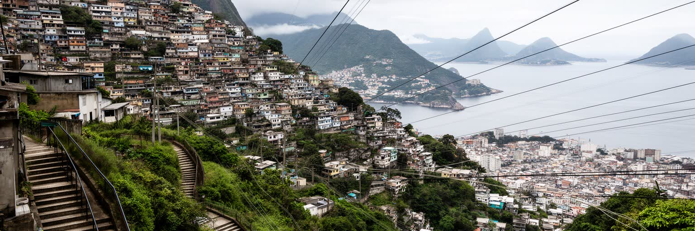
リオのファヴェーラは、都市の外側に隠れた例外ではなく、中心部、海岸、観光地、雇用地に近い斜面や谷に広がる生活圏です。住民は家を自力で建て、道路、水道、電気、学校、商店、教会、文化団体を少しずつ整えてきました。ここには貧困だけでなく、家族、起業、音楽、地域の誇り、相互扶助がある一方、土地権利の不安定さ、土砂災害、公共サービス不足、警察作戦、武装組織の支配、差別が日常を重くします。観光化されたファヴェーラツアーは、地域の収入になることもありますが、住民の生活を一方的に眺める危うさも持ちます。高級住宅地とファヴェーラが近接するリオでは、格差が遠景ではなく視界の中にあります。住宅政策を考えるには、撤去か美化かではなく、住民の権利、交通、衛生、教育、安全、雇用を一体で扱う必要があります。丘の上から見える海は同じでも、そこに暮らす条件は地区によって大きく異なります。ファヴェーラを犯罪や貧困の単語だけで読むと、住民が作ってきた都市の知恵と文化を見失います。リオの都市性は、公式な計画と住民の自力建設がぶつかりながら共存してきた歴史そのものでもあります。住所が正式に認められるか、郵便が届くか、救急車が入れるか、雨の日に通学できるかは、生活の安定を直接決めます。住宅をめぐる問題は景観ではなく、市民権の問題です。だから改善は外から眺める美化ではなく、住民が残りながら安全とサービスを得る仕組みでなければなりません。
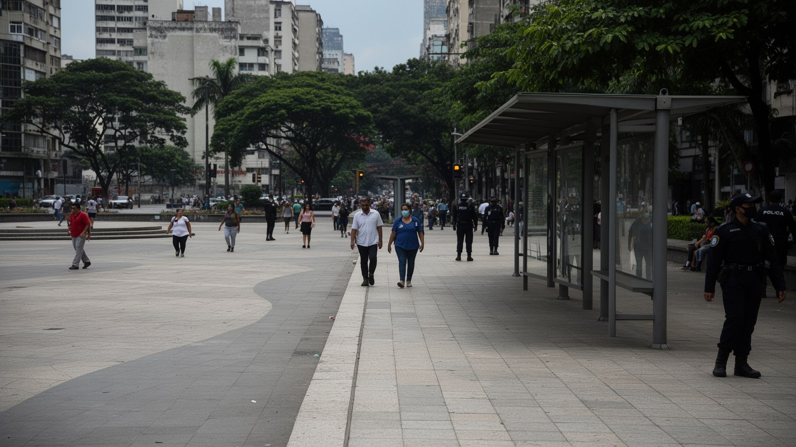
リオの都市経験では、治安への感覚が移動、観光、住宅、夜の外出、公共空間の使い方を強く左右します。犯罪組織、民兵、薬物取引、警察作戦、銃撃、窃盗の不安は地区によって濃淡があり、統計だけでなく住民の行動にも表れます。富裕層は警備付き住宅、配車アプリ、閉じた商業施設で安全を買い、低所得地区では警察と武装勢力の双方から生活が制約されることがあります。観光客の多い海岸や歴史地区では警備が強化されますが、その安全が住民全体の安心につながるとは限りません。安全を暴力の取り締まりだけで考えると、教育、雇用、住宅、精神保健、若者の居場所、公共照明、交通の重要性が見えにくくなります。街路で人が歩き、店が開き、子どもが遊び、女性が夜に移動できることは、都市の自由の基礎です。リオの公共空間は、海辺の開放感と地域ごとの恐れが同時に存在する場所であり、信頼の回復なしに美しい景観だけでは都市は使いやすくなりません。治安政策はしばしば短期の作戦に偏るが、住民が警察、学校、医療、自治会を信頼できるかが長期の安定を決めます。安全は観光産業の条件である前に、暮らす人の尊厳に関わる問題です。暴力への不安が強いほど、人びとは移動時間、服装、持ち物、通る道、帰宅時刻を細かく調整します。そうした見えない制限は、都市の自由を静かに削り、地域間の距離をさらに広げてしまいます。
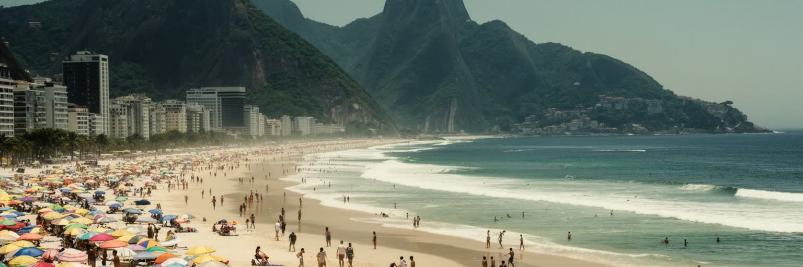
コパカバーナ、イパネマ、レブロンの海岸は、リオを世界に知らせる舞台です。海水浴、散歩、サッカー、ランニング、屋台、年越し、ホテル、音楽、テレビ中継が重なり、観光客と住民が同じ砂浜を使います。ポン・ヂ・アスーカルやコルコバードからの眺望は、山と湾と高層住宅とファヴェーラを一度に見せ、都市の魅力と格差を隠さずに映します。観光はホテル、飲食、交通、清掃、警備、ガイド、イベント、土産物の仕事を生みますが、季節変動、低賃金、治安対策、家賃上昇、観光地の過密も伴います。海岸は自由で開かれた公共空間に見える一方、誰が近くに住めるか、誰が働く側に回るかという階層差を持ちます。リオ観光の豊かさは、単に名所の数ではなく、日常の余暇が都市の象徴になっている点にあります。水着で歩く人、通勤する人、露店で働く人、警備する人、写真を撮る人が同じ歩道を使うため、海辺は社会の縮図になります。夜には潮の匂い、焼き物の煙、スピーカーの低音、配車を待つ人の列が観光地の別の表情を作ります。朝には子どもの砂遊びや高齢者の散歩も見えます。リオの海岸は自然の贈り物であると同時に、管理と交渉の続く都市空間です。観光の成功は治安、清掃、下水、公共交通、救急、救命、価格の透明性に支えられます。砂浜は無料に見える公共空間ですが、そこへ近づく住宅費と移動費は平等ではありません。
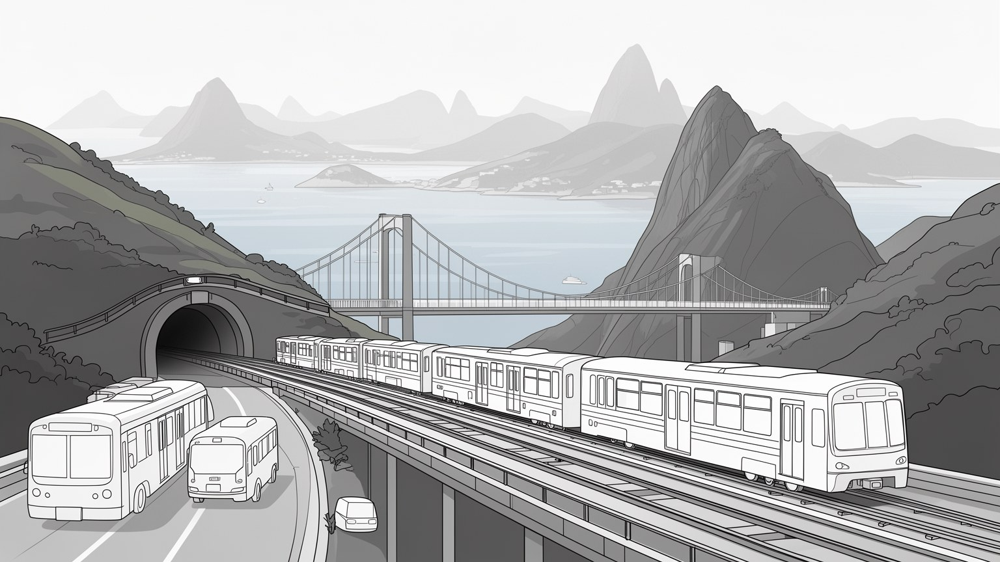
リオの交通は、海岸、山、湾、郊外をつなぐために複雑になっています。地下鉄、近郊鉄道、BRT、バス、フェリー、空港、トンネル、幹線道路が都市圏を支えますが、所得と居住地によって移動の負担は大きく変わります。南部の観光地や高所得地区では地下鉄やタクシーが使いやすい一方、バイシャーダ・フルミネンセや西部の周縁から通う住民は、長時間の乗車、乗換え、混雑、運賃負担に耐えます。道路は山と水に挟まれた限られた回廊へ集中し、事故や豪雨、治安事件が都市全体の流れを止めることもあります。オリンピック前後の交通投資は新しい接続を作ったが、維持管理、運賃、駅周辺の開発が公平でなければ生活改善は限定的になります。交通は観光客の移動手段である前に、住民が仕事、学校、病院、家族に届くための権利です。フェリーは湾を越える日常の足であり、空港は国内外のビジネスと観光を結びます。地形を越える移動の難しさは、リオの美しい起伏の裏面でもあります。通勤時間が長いほど、休息、学習、育児、地域活動の余白は削られます。交通網を読むことは、誰が都市の機会に近く、誰が遠いのかを読むことになります。駅に近い地域では地価が上がり、遠い地域では移動費が家計を圧迫します。公共交通の質は、所得格差を和らげる政策であると同時に、都市圏全体の生産性を左右する基盤でもあります。毎日の遅れは生活の遅れになります。
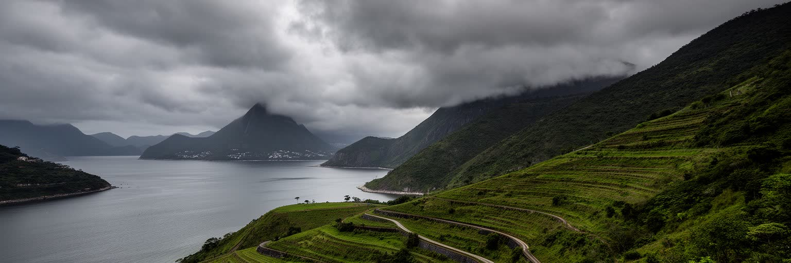
リオの環境問題は、湾の水質、海岸侵食、斜面の土砂災害、豪雨、暑熱、森林保全、廃棄物処理が結びついています。ティジュカ国立公園の緑は都市の気温を和らげ、水源と景観を守るが、都市化の圧力は斜面や低地に住宅を押し広げてきました。強い雨は道路を冠水させ、急斜面では地滑りを起こし、排水の弱い地域ほど被害を受けます。グアナバラ湾の汚染は、下水、工業、港湾、流域管理の不足を映し、オリンピックを機に注目されても長期的な改善には粘り強い投資が必要です。海岸の美しさは都市の資産ですが、海面上昇や高潮、砂浜の管理は観光と住民生活の双方に影響します。環境政策を景観の保護だけで考えると、低所得地区の災害リスクや衛生問題が後回しになります。リオでは自然が都市の魅力を作る一方、都市の不平等によって自然災害の被害が偏ります。森林、海、湾、排水路、住宅政策、公共交通を一体で扱うことが、将来の安全を左右します。山と海に囲まれた都市だからこそ、気候リスクは遠い未来ではなく日常の条件として現れます。避難路、警報、斜面補強、下水処理、ゴミ収集、緑地保全は別々の事業に見えて、豪雨時には一つの安全網になります。環境管理の不足は、最も弱い地区から先に被害として現れます。観光のための美しい海と、住民のための清潔な水、災害に強い住宅、涼しい街路は同じ政策課題です。自然を守ることは、都市の命を守ることでもあります。
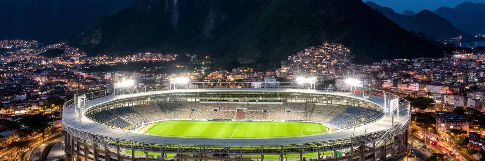
リオはサッカー、ビーチスポーツ、カーニバル、音楽イベント、国際会議、ワールドカップ、オリンピックを通じて世界の視線を受けてきました。マラカナンは単なる競技場ではなく、フラメンゴ、フルミネンセ、ヴァスコ、ボタフォゴの記憶、勝利と敗北、階層を越える興奮が集まる公共空間です。大イベントは交通、港湾、治安、ホテル、都市景観への投資を促し、短期間に都市を変える力を持ちます。しかし競技施設の維持費、立ち退き、財政負担、警備の強化、周辺住民への利益配分は、祝祭が終わった後に残る問題です。観客が感じる一体感は本物ですが、その舞台を作る清掃、警備、飲食、交通、建設の労働は不安定になりやすいです。スポーツはリオの日常文化でもあり、浜辺や路地の小さな試合、子どもの練習、高齢者の散歩が都市の社交を支えます。大イベントを読むには、華やかな開会式だけでなく、公共投資が誰の生活を改善し、誰を周縁へ押し出したのかを見る必要があります。国際都市としてのブランドは観光と投資を呼びますが、学校、病院、住宅、交通の不足を覆い隠すこともあります。競技場の周辺で働く露店、交通職員、清掃員、警備員、臨時スタッフは、祝祭を日々の収入へ変えます。イベントの遺産は建物ではなく、住民が使える施設と移動しやすい街として残るかで測られます。浜辺の試合から世界大会まで、スポーツは都市の階層を一時的に結び、また日常へ戻していきます。
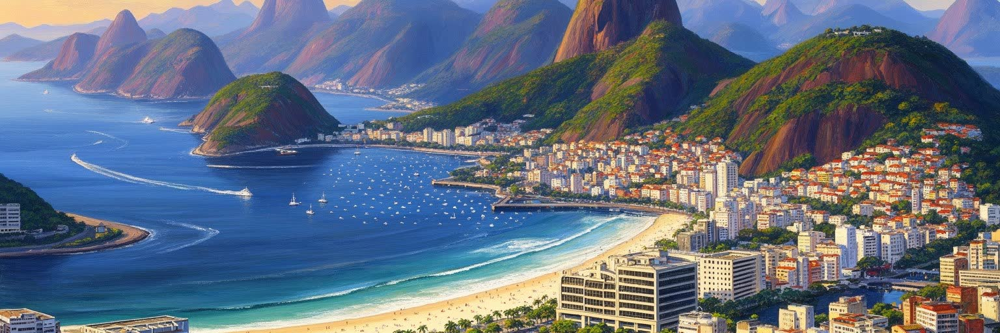
リオデジャネイロは、世界でもっとも印象的な都市景観の一つを持ちながら、その景観の内側に強い社会的緊張を抱える都市です。湾、山、海岸、キリスト像、サンバ、カーニバル、サッカーは都市の象徴を作りますが、同じ地図にはファヴェーラ、長い通勤、警察暴力、住宅不安、石油経済の揺れ、洪水と土砂災害、公共サービスの不足もあります。旧首都としての制度記憶、南大西洋の港湾と資源管理、黒人文化の創造力、宗教の支え、海辺の余暇は、それぞれ別の顔ではなく一つの都市圏の断面です。リオを評価するには、美しい眺望を否定する必要はないが、その眺望が誰の土地、誰の労働、誰の安全対策によって保たれているのかを問う必要があります。観光客にとっての開放感と、住民にとっての不安が同時に存在することが、リオの難しさであり重要性です。経済規模だけでは測れない都市の力は、音楽、信仰、海、地域組織、公共空間への欲望に表れます。リオは成功物語でも失敗物語でもなく、自然の壮大さと社会の不平等が日々交渉する南米の代表的な都市です。その矛盾を直視するほど、都市の魅力も深く見えてきます。名所を巡るだけでは、旧首都の記憶、石油の雇用、宗教の支援、通勤の疲労、豪雨の恐れは見えにくいです。ですがそれらを重ねて見ると、リオは絵葉書を超えた世界都市として立ち上がります。強さと脆さが同じ景観に宿るからこそ、ここは南米を理解する重要な入口です。